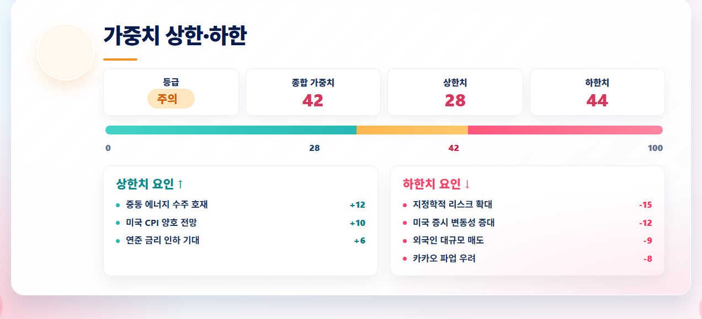

현재 스크린샷 기준 값

메인 페이지의 가중치 상한·하한 카드 캡처. 기준값은 종합 42, 상한치 28, 하한치 44다.
숫자만 놓고 보면 시장은 완전히 무너진 상태가 아니다. 종합 가중치 42는 중립선 아래에 있지만, 극단적 공포 구간으로 보기에는 아직 거리가 있다. 다만 하한치 44가 상한치 28보다 높기 때문에, 시장은 좋은 뉴스에 즉각 크게 반응하기보다 나쁜 뉴스에 더 민감하게 움직일 가능성이 크다.
상한 요인은 살아 있지만 힘이 얇다
상한치 요인에는 중동 에너지 수주 호재, 미국 CPI 양호 전망, 연준 금리 인하 기대가 잡혀 있다. 이 조합은 본래 위험자산에 우호적이다. 에너지 수주 호재는 특정 업종과 한국 기업 실적 기대를 건드리고, CPI가 시장 예상보다 안정적이면 금리 인하 기대가 다시 살아날 수 있다.
하지만 상한치가 28에 머무른다는 것은 이 호재들이 아직 시장 전체를 밀어 올리는 힘으로 번지지 못했다는 뜻이다. 호재는 존재하지만, 투자자들이 그것을 강한 매수 명분으로 받아들이기 전까지는 확인해야 할 변수가 많다.
하한 요인이 시장의 기본 자세를 정한다
하한치 요인은 지정학적 리스크 확대, 미국 증시 변동성 증대, 외국인 대규모 매도, 카카오 파업 우려로 정리된다. 여기서 중요한 것은 개별 악재의 크기보다 악재들이 서로 다른 층위에 있다는 점이다. 지정학은 에너지와 환율을 흔들고, 미국 증시 변동성은 글로벌 위험 선호를 식히며, 외국인 매도는 국내 지수의 수급을 직접 누른다.
하한치 44는 시장이 “좋은 뉴스도 보지만, 먼저 방어한다”는 상태에 가깝다. 특히 외국인 매도가 결합된 하락 압력은 단기 반등을 얇게 만들 수 있다. 반등이 나오더라도 거래대금과 외국인 순매수 전환이 확인되지 않으면 추세 회복으로 해석하기 어렵다.
지금 시장을 보는 방법
첫째, CPI와 FOMC 관련 기대가 상한치 28을 얼마나 끌어올리는지 봐야 한다. 물가 지표가 안정적으로 나오고 미국 금리 기대가 완화되면 상한치 요인이 시장 전체로 확산될 수 있다.
둘째, 외국인 매도가 멈추는지를 확인해야 한다. 현재 카드에서 하한 압력을 키우는 가장 직접적인 국내 변수는 수급이다. 외국인의 매도 강도가 완화되지 않으면 반도체, 플랫폼, 성장주 반등은 짧고 거칠 가능성이 있다.
셋째, 지정학 리스크는 지수보다 환율과 에너지 가격에서 먼저 확인하는 편이 낫다. 주식시장이 늦게 반응할 때도 원화와 유가는 위험 신호를 먼저 보여주는 경우가 많다.
결론
현재 가중치 신호는 “위험 회피 우위의 관망장”이다. 상승 재료는 분명히 남아 있지만, 시장의 체중은 아직 하한 쪽에 조금 더 실려 있다. 종합 42는 공포가 아니라 경계다. 따라서 지금 필요한 판단은 방향을 단정하는 것이 아니라, 상한치가 30대 중후반으로 올라오는지 또는 하한치가 50을 넘어 위험 구간으로 확장되는지를 추적하는 것이다.